Glendenning Roots
____________________________________________________________________________
DONALD GLENDENNING
Glendenning Roots
___________________________________________
Donald E. M. Glendenning C.M.
Charlottetown, P.E.I.
Canada
2007
Glendenning Family Memories
Top left: Elmer Alton Glendenning
Top right: Jane Elizabeth Jardine Watling
Bottom left: Walter and Elizabeth (Peters) Glendenning
Bottom Right: Jubal and Grace (MacDonald) Watling
From the Collection of Jane Elizabeth Jardine (Watling) Glendenning
Dedicated to the Memory of
my Father and Mother:
Elmer Alton Glendenning (1875 – 1938)
and
Jane Elizabeth Jardine (Watling) Glendenning (1890 – 1964)
INTRODUCTION
My father and mother came from large and close families; visits and visitors were frequent and family ties were strong, even if remote. At an early age, I became intrigued by the number of neighbours along the length of the Black River to whom I was related. By the late 1940’s I began gathering family information.
Information was drawn from many sources with the Glendenning Family Bible in my Mother’s possession as my point of entry. Shortly thereafter, I conducted a survey on my father’s side of the family and I was hooked, although my information gathering was sporadic, at best. The benefit of computer based technology and a new spurt of information gathering after retirement resulted in a cabinet full of files, scraps of paper on every flat surface in my basement and a database containing over 4,000 names. The conclusion reached as a youngster in Black River has been borne out; at that time I was related to most people in the community.
My focus has been broad rather than narrow. By that, I mean, I am interested in the broad picture of who I am rather than pursuing only my Glendenning roots. As a result, I have since learned that, in addition to my Glendenning ancestry, I am also a descendant of folks named Peters, Sealey, Harley, Bidders, Rae, MacDonald, Watling, MacAskill, MacNaughton, Leach and Jardine. And if I were to reach back further, I would find other ancestors as well.
This document does not pretend to be a history of the family; instead, it is a record of what I learned during my search; a history would be more thorough and complete. If a lead interested me, I followed it. As a result the amount of information on each individual or family varies greatly.
I believe the included information to be accurate but I am sure that there are mistakes; if I knew what the mistakes were, I would have corrected them. When in doubt, I prefaced my remarks with “I think” or “it is likely” or a similar statement. I welcome corrections and additions. One of my weaknesses is in editing; therefore, the reader is likely to find many inconsistencies - but hopefully few errors. Together we can continue to grow the record of our mutual ancestors. Unfortunately, it is only with recent information that I have been attributing sources.
Among other things, I’ve reviewed books, searched through newspapers, undertaken an occasional Internet search, gathered census data and reviewed church and cemetery documents. I’ve also spent hours pestering family and friends and steering conversations to reveal additional information. Most of the photos came from my mother’s collection.
Some of the information in this document has already appeared in versions distributed to siblings. Other information appeared in occasional newsletters, the Family Chronicle, now available, thanks to my son, Brian, and Granddaughter, Lisa, on the Glendenning Website www.glendenning.net/don
In the early stages of information gathering, I developed both a Watling and a Glendenning chart, each 10 to fifteen feet long; these charts certainly provided a tremendous insight into the family relationships in the community of Black River.
The task is not complete; it will never be finished. It is time, however, to consolidate that which I have learned and publish it for the benefit of others. It is my hope that readers will find the document of interest but, even more important, I hope that others will pick the search and extend the knowledge of both the extended family and the community. I also want to pursue some other interests. Having said that, however, I plan to continue to integrate new bits of in formation as I find them.
I want to thank all who contributed either knowingly or unknowingly to this document. My Mother and the old family Bible were the first sources but all my siblings contributed along the way. Family historians, many of whom are relatives, were most generous with time and information. As were friends and folks I have never even met. Thanks to all.
Finally, I must point out that this document entailed a considerable commitment of time that really should have been allotted to my wife and family. Special thanks to Carol but also to Brian and Janet, Marie, Lisa and Laura.
I would be delighted to hear from readers at:
Donald E. M. Glendenning
62 Queen Elizabeth Drive
Charlottetown, PEI C1A 3A9 Canada
Tel: 902-892-5859
Email: don@glendenning.net
January, 2007
CONTENTS
Introduction
Background
Glendenning Roots
Watling Roots
Elmer Glendenning
Jane Watling
Together in the USA
Brief Return to New Brunswick
Lured Back to the USA
Life at Little Branch
Widowhood
12 Appendices
A Offspring
B Ancestors of Elmer
C Ancestors of Jane
D Descendants of Elmer and Jane
BACKGROUND
Introduction
While we usually carry the name of the male side of our ancestral family, in fact, each person is equally a descendant of many other families as well. In the writer’s case, he is directly descended on his paternal side from families named Glendenning, Beattie, Rae, Bidders, Harley, Sealey and Peters. On the Watling side, the writer is directly descended from families named Watling, Leech, MacNaughton, MacDonald, McAskill and Jardine. These families reflect Highland and Lowland Scots, English and Irish roots; I recall a glendenning from Utah who visited us in 1947 saying that the Glendennings were descended from Robert the Bruce. Both sides are also thought to include Viking and Norman blood as well. Of my Great Grandparents, four were Scots, one was English and three were Irish, however, the Irish ancestors may well have been emigrants from England a generation earlier.
The surge of Scottish settlers to Canada in the late 1700’s may be attributed to a number of events. First was the Scottish Rebellion followed by an outlawing of the clan system by an Act of Parliament in 1745. Scots were required to take an oath not to carry weapons and never use Highland garb. Also in the late 1700’s there was a great increase in the price of wool and mutton which resulted in tenant farmers being turfed from the land and cattle farms being replaced by large sheep farms.
People left their homes to come to Canada for many reasons including:
escape from political unrest, religious strife and war
getting away from poverty and crowded slums
breaking with the rigid social class structure
to start a new adventure and a new life
an alternative to serving time in prison
being forced out as tenant farmers
religious persecution
to become masters of their own fate
see for themselves the land where trees yielded sugar, soap and fuel
to take up land offered at the close of military service.
Immigrants were often at the mercy of promoters, profiteers and land speculators. The journey by sea was long, overcrowded and difficult; many people did not reach the new land. On Grosse Isle, at the mouth of the Saint Lawrence River, over five thousand people who endured the passage, lie buried.
As of the time of writing, I do not know where any of my ancestors first set foot on solid ground in the new land. It is likely, however, that it was Cape Breton, Pictou, Halifax, Saint John or the Miramichi. The exception to our not knowing is my great grandmother’s sister,
Mary Ann Harley, who first set foot in Canada at Pokemouche on the Baie de Chaleur near Bathurst, New Brunswick. On her 99th birthday, birthday, she was interviewed by a newspaper in Portland, Maine where she was living. A reprint of that story may be found in the next section of this document.
On landing most anywhere in Eastern Canada, settlers found a land covered with forests where wild life roamed in abundance; the air was fresh and land, sea and air provided fresh food. Their first task was to clear the land and erect shelter for the looming winter - log houses to stem the cold the likes of which they had not experienced before.
Origin of Names
Until about 1000 A.D. most people in Europe had only one name. Later, to distinguish one person from another, a second name was added. The second name was usually taken from the person's occupation, location, father's name, or some characteristic.
Coats of Arms
Knights in battle wore a suit of armour for protection, however, in the heat of battle it was easy to mistake friend for foe. In order to provide a means of quick identification, knights began painting designs on their suits of armour. These designs were also woven into light coats and worn over the armour. Thus originated the term "coat of arms".
Many early coats of arms had neither crest nor motto; these were later additions. The crest worn above the shield and helmet, was usually used in tournaments but not every knight was eligible to participate. The motto is believed to have originated as a battle cry in the seventeenth century.
There is really no such thing as a family coat of arms. Coats of arm belong to the chief and are passed down by him through his eldest son. A descendent may, however, apply to the Court of the Lord Lyon of Scotland to have a coat of arms established and registered. A personal coat of arms is usually some variation of that of the ancestral coat of arms.
Clans
Scottish clans are a form of tribal system, which began to take shape in 843 when the Picts and Scots united. Clann is Gaelic for children and works like an extrended family with a chief as head. The Chief was responsible for protecting the clan from its enemies, for settling disputes, and for leading the clan in battle. A clan would often offer protection to a smaller groups known as septs. The Glendennings were a sept of the Douglas clan.
Tartans
Tartans appear at first to be patterns of cloth found in a community and reflected the local colours and skills of local weavers. They were associated with the area where one lived rather than the clan to which one belonged. This began to change, however, in the 18th century when tartans were adopted by various clans regardless of where clan members lived.
Blazon of Arms
A written description of a coat of arms, called a blazon of arms, was prepared in a mixture of Ancient English, Latin and French when a coat of arms was granted. The actual design, of graphics, was prepared from the blazon so it is not surprising that there are differences as interpreted by different artists.
GLENDENNING ROOTS
THE BATHURST CONNECTION
The Canadian roots of my paternal ancestors are in an area north east of Bathurst, more precisely, the inland community of Canobie. Travelling east from Bathurst along the coast towards Caraquet, one finds a number of communities familiar to the Glendenning family. Most relevant are the following as described in the Geographical Names of New Brunswick, 1875:
Bathurst, originally named St. Peters in 1671, was named for the Third Earl of Bathurst in 1826.
Salmon Beach was settled around 1820 by immigrants from Ireland and included the districts of Prospect Hill, Strawberry Plain and Mount Pleasant.
Janeville was named for Jane Dawson, wife of Benjamin Dawson, who settled there about 1835.
Stonehaven was probably named for Stonehaven, Scotland.
New Bandon was settled in 1819 by several families from Bandon, Ireland.
Canobie named after Canonbie, Dumfriesshire, Scotland.
According to Pioneer Settlers of the Bay Chaleur, settlement on the coast east of Bathurst took place by the Acadians in the latter half of the 1700s and, although living on the land, they were not given their grants until 1812. Apparently, an organized system of granting of land did not evolve until the 1800s and even then there could be delays of a decade or more between petitioning land and receiving land. Even then, a grant was not final until at least five acres had been cleared. The first registered land grants in the area were made to James Sutherland and his brother Hugh, and to Richard Nevison in 1789.
Once settled, men began the task of clearing land and erecting a house and barn. Trees not needed were stacked, dried and burned. Few oxen or horses were available so the land was broken and cultivated with the aid of a hoe. The initial crops were planted between the stumps, which, over time, rotted and were removed. In many cases, the initial seeds were often carried by settlers from the old country.
While I do not know the precise point where my ancestors set foot in the new world, we do know that many immigrants first set foot in Canada in such ports as Saint John and Halifax; some likely trans-shipped to smaller ports. On the other hand, some came directly to the Miramichi, Bathurst, Pokeshaw, Bass River and Caraquet. The Bay Chaleur history records that Pokeshaw had a secure harbour and was an active fishing centre. As early as 1812, 30 acres of land had been cleared and a number of houses had constructed. Sailing vessels stopped there for water and supplies including fresh meat.
The exception to our not knowing is the account given by my Great Grandmother’s sister, Mary Ann Harley, who first set foot in Canada at Pokemouche on the Baie de Chaleur near Bathurst, New Brunswick. Mary Ann was born in Courtmacsherry, Ireland on 6 February, 1799. On her 99th birthday, she was interviewed by a newspaper in Portland, Maine where she was living. I am grateful to Willis Hamilton for a copy of an article appearing in a Portland paper at that time.
“I was born in Courtmasherry, Ireland, February 6, 1799. This is a small town only a little distance from the city of Cork, near the Bay of Cork. My maiden name was Mary Ann Harley, and my father was a schoolteacher in the town. I had two brothers and three sisters. All dead now. One of my sisters lived to be 94, died on her birthday. I can remember the town where we lived very well, and the names of friends and schoolmates. I left Ireland in 1822. I can remember about my father and mother talking about the rising of ‘98; people never seemed to get tired of taking about that event. My father was of English descent, a Presbyterian and I was raised in the church.
Very well can I remember the day on which two big ships of war sailed into Cork harbor, their decks crowded with men and their masts with gay flags. These ships were bringing us the first news of the battle of Waterloo in which that terror of the world and ogre of history, Napoleon Bonaparte was defeated by our own Duke of Wellington. People went crazy with joy; the bells of the city of Cork were rung, and great bonfires were lit in celebration of the great event. Three of the officers of an Irish regiment were quartered at my father’s house for many days, and I remember some of the stories they had to tell of that terrible fight. Their bright uniforms and handsome faces made a great impression on me.
In 1822 I went to visit a lady friend in Queenstown, and while I was there the first steamboat ever to come into Irish waters came into the harbor. Everyone turned out and lined the docks to the strange craft which moved so swiftly through the waters without sail or oars. It was a wonderful thing then, but I suppose the people of Queenstown see enough such craft now. While I was in Queenstown I got a letter from my brother William in America. He was a government surveyor, and he wanted me to come over as soon as possible as he said he had a young, handsome and wealthy husband waiting for me. I went home to my parents and it was decided that I would sail for America.
I was one of 150 passengers on a sailing ship which left Cork on May 7, 1822. It was a terrible voyage. I was sick almost all the way, and glad to see land after seven weeks and three days aboard that ship. I landed at a place called Pockshaw on the Bay of Chaleur. It was a very small settlement then, only a few small houses made of logs. My brother was there waiting for me. We had to walk 75 miles through the woods to get to his home. No roads, no conveyances of any kind, not even a path. It was a trackless forest in which not one tree had been cut. We made our way by means of compass over windfalls and across brooks to Newcastle. We were three nights on the road and we had to sleep in the woods without any shelter.
On the fourth night we got to Newcastle, a very small settlement. Eight months after my arrival at this place I married John Henry; he was a man of business and agent for a large mercantile firm. I had nine children and seven grew up and married. I don’t know how many descendents I have, but they must number in the hundreds. My husband died 28 years ago (1870) I lived on the Miramichi until after my husband's death, then I came to the States where some of my children lived. I had a brother named John Harley who built ships on Bolters Island near Newcastle.”
Land Grants
Although my Great Grandfather settled first near the coast at Salmon Beach, he later relocated inland to Canobie. The table below was developed from two the Crown Land Grant Index and Grant Reference Plans published by the New Brunswick Department of Natural Resources.
36
Norman Peters 1892-03-07 35
F.W Ellis 1939-10-06 34
John Jagoe 1872-12-30 33
J. McCarthy 1882-08-12 32
J. McCarthy Jr. 1868-04-29 31
J Glendenning 1868-08-17 30
Walter Glendenning 1873-02-17 29
H. Knowles 1886-02-23 28
E. Glendenning 1901-07-16 27
Timothy Savage 1874-04-20 26
John W. Lowe 1872-07-29 25
John Taylor 1873-06-27 24
Julian Landry 1904-02-26 23
R. H. Sealey 1929-11-29 22
Thomas A. Knowles 1926-10-25 And
on the other side of the road: 15
Abraham Jagoe 1869-09-26 14
Silvanus Ellis 1890-11-25 13
Edward Cormier 1899-08-31
Figure 1: Selected land grants in Canobie, NB
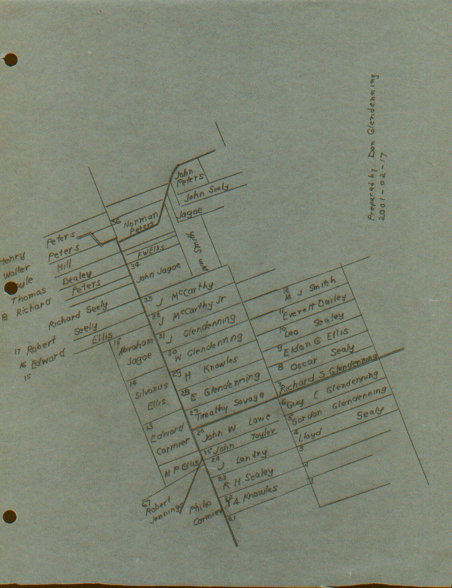
Springfield Settlement, behind and accessed from Canobie, was settled much later and includes the following grants:
Springfield 7
Richard S. Glendenning 1942-05-27 6
Guy E. Glendenning 1946-06-21 5
Gordon Glendenning 1946-10-30 .
Figure 3: Some land grants in Springfield, NB
Church
At first, church services were held in the local school but in 1899 a church was built, sometimes referred to as the Union church, and used by Presbyterians, Methodists and Anglicans. (It is now an Anglican Church).
Our Grandfather, Walter, was active in the church including being a Sunday school teacher. He is also reported to have been one of the first trustees and, according to the Chaleur History, cut the first lumber to start the building. The 1891 census shows Walter as Presbyterian.
I do not know where my Great Grandparents, John and Margaret Glendinning are buried but believe them to be buried in the New Bandon Cemetery where a number of their descendants are buried. George Glendenning told me that on a number of occasions bones were encountered when digging new graves in that cemetery. George also thinks that John Glendinning may have attended/been a member of the Methodist Church.
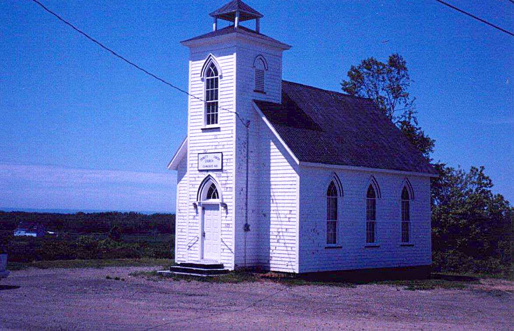
Trinity Union Church, Canobie
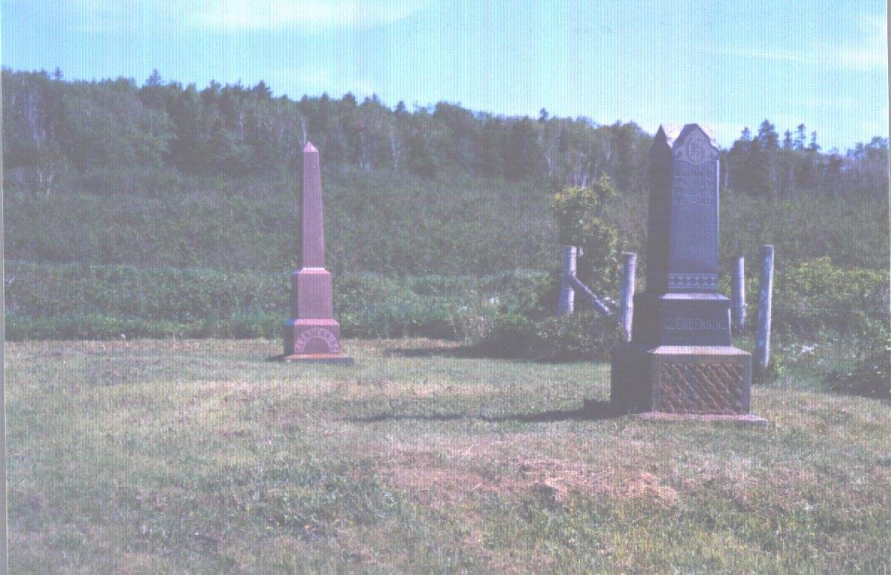
New Bandon Cemetery
The black stone in the above photo is for Walter Glendenning and the red stone for his brother, John Glendenning. Unfortunately I do not have a photo of the Walter Glendenning stone, however, the inscriptions read as follows:
Walter 1845- 1908
His wife, Elizabeth P. May 14, 1915 Age 67
Child Lillian 1870 - 1894
Rufus 1896-1898
Betty 1925-1928
Chipman L 1887-1948
His wife, Louise Ellis 1894-1966
The Walter Glendenning in the above inscription is my Grandfather; Elizabeth is his wife, my Grandmother; Chipman is my father’s brother; Louise is Chipman’s wife and Betty is their daughter who died young.
But the essence of a community is its people. The remaining paragraphs, therefore, provide such information as I have gathered on each of the following families known to be a direct ancestor:
A RAE
B BIDDERS
C HARLEY
D SEALEY
E PETERS
F GLENDENNING
A RAE
My Great-great-grandmother, Mary Rae, married John Glendinning in Scotland. Rae, Rea and Ree are old surnames in Dumfriesshire and are probably of local origin. They appear to have been a troublesome lot and were frequently in court. According to Black’s Surnames of Scotland, the earliest mention of the name is around 1231 when Robert Raa a mason, witnessed a charter to the Abbey of Culross. Thomas Ra was a witness about 1290, Robert Ra was burgess of Stirling in 1296-1300, William Raa had a pension in 1329, Robert Raa was a juror at an inquest in Roxburgh in 1380, William Raa was Bishop of Glasgow and there are other instances of the name Raa. The name also appeared in Perth in 1546. Rae is a Sept of the MacRae clan. MacRae means son of Rae.
B BIDDERS
My Great Grandmother, Margaret (Harley) Glendinning was the daughter of William Harley and Anne Bidders. I know not their origin but it was likely in England and they migrated later to Ireland.
C HARLEY
My great- grandmother was Margaret Harley. Much of my information comes from secondary sources - family lore and Pioneer Settlers of the Bay Chaleur which was published in 1978. It is also based on entries in the old family Bible, inscriptions on headstone, information provided by Willis Hamilton and later contact with Harley descendants.
Harley is a well-known English name in Ireland. According to my sources, the name is also found in Scotland but is considered in Scotland as a late-comer from England. The name is recorded as early as 1228. Harle, Harles, Harrily and Hurley, the latter in Cork County, Ireland. One source suggests that Harley is derived from Hareswood - the name of places in both Shropshire and Yorkshire, England. According to Black’s Surnames of Scotland, Johannes de Herl witnessed a charter in the Abbey of Kelso around 1228. De Herl is thought to have come from Kirkharle in Northumberland which is the name of a property in Northumberland County. An earlier version, Harrily, appears to have disappeared.
My Great-grandmother lived with her parents and siblings in Courtmacsherry, a small town near Cork, County Cork, Ireland. Her father, William, was of English descent and was a school teacher in Courtmacsherry. He was Presbyterian and, apparently, quite active in the church. At least one of the children, Mary Ann, was born in Courtmacsherry and refers to herself as having been raised in the church. The chances are that the other four children were born and lived in Courtmacsherry as well. Five Harley siblings came to New Brunswick:
William was a government surveyor. He married near Fredericton and subsequently moved to Upper Canada.
Elizabeth married William Knowles and lived in the Bathurst area
Mary Ann was born in Courtmacsherry, Ireland. She received an invitation from her brother, William, to come to Canada where he had "a young, handsome and wealthy husband waiting". She sailed from Cork on May 7, 1822. Her brother, William, met her at Pokemouche and they walked through the woods to Newcastle; the journey took four days and they slept in the woods as they travelled. Eight months later she married John Henry of Newcastle; he died in 1870. It appears that they moved from Newcastle to New Bandon near Bathurst and later Mary Ann moved to Portland to be near her family.
John Was ship carpenter and master builder with William Abrams for 20 years then worked at Joseph Russell's yard on Beaubears Island. In 1850, John Harley and George Burchill bought the shipyard from Russell; they dissolved their partnership in 1857 but Harley and his sons continued to build ships on Beaubears Island. He is credited with having built 62 ships on the Miramichi. He lost the Island to the Commercial Bank sometime after 1866.
Margaret, my Great Grandmother, was a teacher; more information about her is provided in the section on the Glendennings.
D SEALY
My Great-grandmother was Jane Sealy married to John Peters. Sealy is of Norman extraction and settled originally in Somerset and Devon counties in England. Other forms of the name include Seeley, Seely, and Seelye. The name is thought to mean "a happy or prosperous person, the good, simple man." John Sealy moved to from England to Ireland around during the reign of Charles the Second. Reference is made to John’s son Robert of Bandon. Other Sealys include George of Gortnoharna, Robert of Gortnahorna, John-Thomas of Julianstown, Co. Meath.
E PETERS
My grandmother, Elizabeth Peters, married Walter Glendenning. Settlers of the Bay of Chaleur says that the Peters came from Ireland, however, my search shows Peters, meaning “Peter, a rock”, and is not uncommon in the Angus, Kincardine and Aberdeen areas of Scotland. The name John Peter is found in 1636, Andro Peter in Kirkcaldie in 1840, David Peter in Peebles, southern Scotland, in 1645 and Alexander Peter in Melrose in 1648. The name is also found in southern Scotland which is closer to Dumfrieshsire. Peters, Pieter, Peterson and probably Petrie have the same roots. My references show Peters as a Sept of both the MacGregor and MacLaren clans.
The name Petrie was found in Balwelow in 1513, Andrew Petrie was Vicar of Wick Caithness in 1530 and there are a number of later references.
I have also learned that some Peters trace their name to the Acadian name, Petrie.
F GLENDENNING
As a starting point for tracing the Glendenning roots, I have the following entries from the Bible belonging to my father, Elmer Alton Glendenning and now in the hands of my brother, Norman Glendenning. These entries read as follows:
"John Glendinning (came) to this country in 1830 - (Married in 1833) from Annan, a small seaport town in South of Scott Land. Was himself a native of the aforesaid country. Born in Calister Hall, Parish of Middelbie in 2 " of April 1807".
and a later entry which reads
"In Memory
Of
John Glendinning who died May 15th A.D. 1877 in Canobie, Parish of New Bandon, County of Gloucester. A native of Scotland, Dumfries. Born April 2nd A.D. 1807. Died May 15th 1877. Aged 70 years."
Search in Scotland
Early in my search, I got in touch with the Scots Ancestry Research Society, Edinburgh, Scotland, providing them with the information from the family Bible and asking that a search be undertaken. On August 14, 1957 the Society responded as follows:
"Prior to 1855, registration of births and marriages in Scotland were voluntarily recorded in the old parochial registers (unindexed) of each Parish. The old parochial registers of Middlebie were accordingly searched for the birth of John Glendinning, and the following entry was found:
'July 10, 1808 John Glendinning and his wife Mary Rae, at Callister Hall, had a son baptized John'
Other children found recorded to the above couple were:
Irvine (son) born 6:7:1809 baptized 30:1:1810
Nancy 30:1:1812
William Park )
(presumably died young) twins 5:8:1816
Mary )
William born 16:4:1819 - 4:4:1821
The marriage records for Middlebie are unfortunately blank from 1764 - 1854, and could not therefore be searched for the marriage o John Glendinning and Mary Rae. The old parochial registers of Middlebie were, however, searched for 1760-90 for the birth of John Glendinning, but neither this nor any Glendinning births were found to have been recorded during this period.
The old parochial records of the neighbouring parishes of Langholm, Hoddam, Westerkirk, Eskdalemuir, Canobie, Halfmorton (old parochial registers commence in 1787), Annan, Kirkpatrick Fleming, were then searched, where possible from 1768-88 for the birth of John Glendinning, and the following was found in the old parochial register of Langholm:
February 2nd 1772 John son to James Glendinning at Broomholm and Isabel Beattie his spouse, born 29th January'
As we had no way of proving the relevance of the above entry, we were reluctantly compelled to halt our search at this point."
Another entry in the family Bible provided the following information:
"In memory of William Glendinning who died at Skelly Holm, Parish of Mungo Dumfriesshire, Scotland aged 56 years. He was born at Calstor Hall, Parish of Middlebie near Kirtelton."
Presumably this is the same William Glendinning, born 16:4:1819 referred to in the letter from the Scots Ancestry Research Society
For fifty years, the above was all we knew about my Grandfather’s siblings; that changed, however, in late 2005 following an Email enquiry from Ian Glendinning of Aberdeen, Scotland. Ian, by the way, is related to the Glendennings of Harcourt, New Brunswick. Ian pointed me to the Death Records of Langholm, Dumfries, Scotland from 1855 onwards.
First of all, Ian pointed out that the James Glendinning married to Isabel Beattie, identified as a possible ancestor by the Scottish ancestral Research society, was not, in fact an ancestor of mine. I have since removed James Glendinning married to Isabel Beattie from this document.
Great Grandfather Glendennings sister, Mary Glendinning, whose name appears in our family Bible, married John Blacklock on November 30, 1837 and they had at least eight children all born in Langholm.
John James born February 11, 1838
Martha born April 22, 1840
Thomas born about 1842
Irvine or Irving born about 1845
Mary born about 1847
Janet born about 1851
Margaret born October 10, 1855
Alexander born September 10, 1859
Mary (Glendinning) Blacklock died on May 2, 1891 in Langholm. As I recall, Langholm is less than 10 miles from Callister Hall.
Great Grandfather Glendinning’s brother, William, mentioned in the family Bible referred to above, born Middlebie, Scotland, April 16, 1816 and died St. Mungo, 1874 married Grace Marshall born 1825 at Hodden and died before 1876. They had at least 3 children:
a son, name unknown
Jane born Sept 9, 1855 and died July 11, 1876 at Langholm, Scotland. She did not marry.
John born about 1840
Dumfriesshire
Dumfriesshire, in southern Scotland, is considered the home of the Glendinnings/Glendennings with the first record of the family being a deed granting territories of all the baronies of Clifton and Merbotel in Roxburghshire to Adam de Glendonwyn in 1286.
Dumfriesshire and Roxburghshire are actually adjacent to each other in southern Scotland near the border with England. The area was subject to many changes as a result of invasions by Celts, Irish Gaels, Angles, Picts, and Vikings. By the year 1000, discernable clans and families began to emerge. This area figured prominently in the many border disputes between England and Scotland.
My Great Grandfather, John Glendinning, was born in Callister Hall in Dumfriesshire, Scotland in 1807. He came to New Brunswick in 1830. Bartholomew’s Gazetteer of the British Isles, 1887, described Dumfriesshire as follows:
DUMFRIESSHIRE, maritime co., on S. border of Scotland;
adjoins the cos. Of Lanark, Peebles and Selkirk on the N., and on the South is washed by the Solway Firth; extends about 53miles NW. and SE, between Ayrshire and Cumberland, and about 32 miles NE. and SW. between Roxburghshire and Kircudbrightshire; a coast-line about 20 miles; area, 680,217 ac., pop. 76,140 or 72 persons to each sq. mile. The surface generally is bare and hilly. The dales of the Nith, Annan, and Esk, however, are rich in beauty, and contain fine holms for pasture and some good arable land. The rivers are numerous, and yield splendid salmon and trout fishing. The coast and S. region is low and sandy; much of it is covered with morass, and lochs are numerous around Lockerbie; but there is also much good corn-growing land. The Lowther or Lead Hills along the N. boundary are upwards of 2000 ft. in height, and abound in lead ore. These and other hills round the borders are mostly smooth in outline, and afford excellent pasturage. Red sandstone is a prevailing rock, and limestone, coal, and lead are worked.”
Annan
Because John Glendinning sailed from Annan, my early view was that Annan was significant component in my search. I now realize, however, it was simply the seaport from which John Glendinning sailed. Nevertheless, having gathered the information, I include it here for the reader’s information.
Annan was founded by Robert the Bruce and developed at a major crossing of the Annan River. Annan was often fought over during the times of Anglo-Scottish conflict. Between 1298, when it was first destroyed until after 1660, it was a frequent site of battles. Erosion took away part of the early castle and silting later left the town too far inland for navigation. Annan, it seems, became a major embarkation point for Scottish settlers. People gave their departure point as Annan even though their homes may have bee far from there.
The reference to Robert the Bruce is interesting also because, in the late 1940’s, a member of the Mormon Church visited Black river and, among other things, said that the Glendennings were related to Robert the Bruce.
In 1956 I contacted City Hall in Annan and told of my family connection. My letter was passed to James Glendinning who owned and operated a men’s clothing store. Later I visited Annan and stayed, as I recall, two nights with James maiden aunts. Next day, James took me on a tour of the countryside but I do not remember visiting Callister Hall where my Great Grandfather, John, was born. James has since died and the store is operated by his son, Walter, who I met on a return visit to Annan. (www.glen hire.demon.co.uk)
Glendinning Hamlet
In the mid to late 1800s (and likely much earlier) the name Glendinning Hamlet was included in maps of Scotland. It was a small hamlet located some 25 to 30 miles north of Annan. It was known in the late 1700s for its antimony mining. In the mid 1800s the ruins of a castle could still be seen there. My search so far has not turned up any direct connection between my ancestors and Glendinning Hamlet although it is likely that such a connection exists.

Callister Hall
It is customary in Scotland to name each property. Callister Hall is the name of the property where John Glendinning was born in 1807. It still stands today and is shown on some Scottish maps although seems to have disappeared from the more recent ones.
In September, 1989, I visited Callister Hall. It is a single story stone, whitewashed sheep farmers cottage located some 25 miles northeast of Annan and some five miles west of Langholm, on a country road in rolling, somewhat stony, country. At the time of my visit, Callister Hall was occupied by a family named McKennel (McCannel?). Callister Hall is thought to have been a halfway house (country inn) and to have suffered a major fire but was rebuilt. Since then, Joy Ayer, a GGGranddaughter of John Glendinning, visited Callister Hall on a day that new owners, by the name of Domoney, were moving in. Joy has kept in touch with the new residents.

Don Glendenning at Callister Hall,Scotland

Across the road from Callister Hall, Scotland
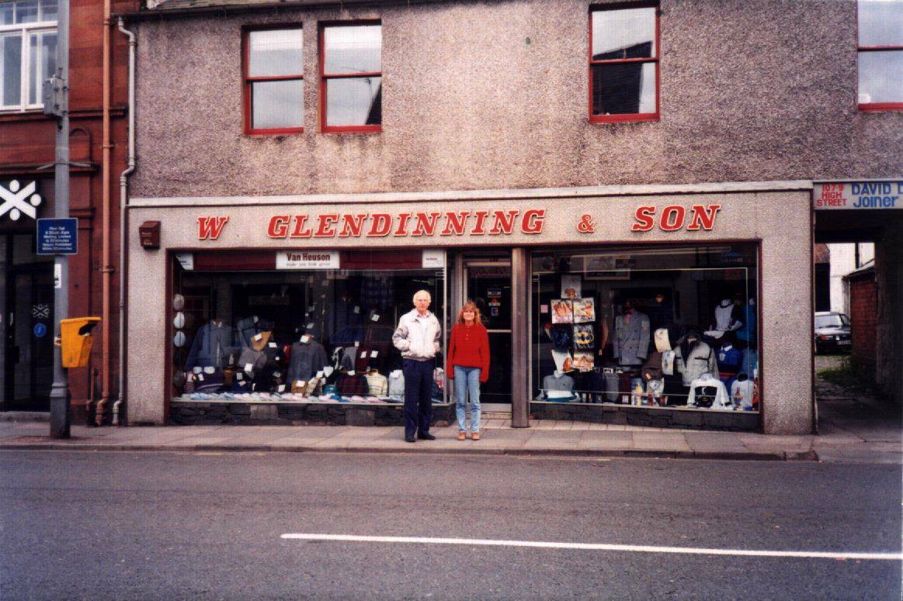
Don and Janet Glendenning on Main Street, Annan, Scotland
Origin of Name Glendenning
The name Glendinning is believed to be locational in nature and probably means "one who came from the hidden dale". Glen is a common prefix and signifies a narrow valley bounding a river or stream. The name has been, and still is, spelled in a variety of ways but can be linked to Glendinning, Glendining, Glendennings, Glendowyne, Glenndinnin, Glendynwynnng, Glendinnin, Glendouwyne, Glendounn, and Glendoning. The two most frequent spellings are Glendinning and Glendenning. The name Glendwnwyne first appears in 1384 in the Parish of Westerkirk, Dumfries.
Another source suggests that the name originated in Wales and belonged to the Glendowers which was the Royal Family of Wales. Many Welsh moved to the Border area of Scotland which is where the Glendinnings are found. In 1263 at the Battle of Largs, Robert de Glendonwyn distinguished himself and was rewarded by the Scotch king with a grant of large estates in Ayr. The name Glendenning was known in Scotland before this as the name of a large tract of land owned by the Douglas family.
While browsing the internet (2002/03/28) I found a reference to Glendonwyne originating from “Glyn” meaning valley, “din” being a fort and “gwyn” meaning fair or white. This could be interpreted as fair skinned people from the fort in the valley.
Glendinning or Glendenning
It is not clear when or why the name Glendinning changed to Glendenning. The original entries in the family Bible, as noted earlier, are Glendinning. The name appearing on the gravestones for Walter and John, the next generation, is Glendenning. The early land petitions were Glendinning while the later ones were Glendenning. The change is most likely due simply to poor handwriting.
Blazon of Arms
Documentation for a Glendenning Coat of Arms can be found in Burkes General Armory.
The grant of arms is described as:
“Quartered
ar. and sa. A cross parted per cross indented and counterchanged of
the same.” When
translated, the description reads
"Quartered,
silver and black; a cross divided crosswise, indented
and counterchanged".
Figure 5: Glendenning blazon of arms
The crest is described as “the sleeve of a gold coat, upon the point of a sword". The motto or battle cry is "Have Faith in Christ". Glendennings wear the Douglas tartan.
9 Glendenning Coat of Arms
The drawing of the coat of arms included in this text was obtained from a coat of arms given to me as a Christmas gift. It has not been verified by the Court of the Lord Lyon of Scotland. One variation of the Coat of Arms shows a pair of hand holding a cross and the motto " Have Faith in the Cross" Which version is the original and which a modification, I do not know. I have found a number of coats of arms for Glendenning which are very similar to the one included in this text.

Figure 6: Glendenning Coat of Arms
Clan Connection
The Glendennings became closely associated with the Douglas clan and rented land in 1408 from Archibald, Lord of Galloway who was a Douglas. In fact the Glendennings are usually referred to as a "sept" of the Douglas clan rather than being a clan in their own right. Matthew of Glendonwyn became Bishop of Glasgow in 1408. William Glendonwyn was Rector at Crawfordian. Simon, chief of the Clan, acted as a go-between in arranging a truce between England and Scotland in 1451. In 1548 the Glendennings were condemned by the Scottish Parliament as one of the "unruly clans". John Glendinning was outlawed in 1667 and his lands and titles were forfeited.
But there also appears to be a connection to the Elliot/Eliot Clan. Certainly they are from the same geographic area but the kinship awaits further exploration.
Other Glendennings
New Brunswick and Nova Scotia have a number of Glendennings and Clendennings who come from Dumfriesshire but a connection has not yet been found - at least by me.
There are Glendennings in Ontario, some of whom came into Canada as United Empire Loyalist. Again, I have not been able to trace a connection.
Many Glendennings and Clendennings settled in the Eastern half of the United States. In fact, Charleston West Virginia was named for Charles Clendenning. Again, I have found no connection to our family. The Synoptical Family History Giving Sketches of the Glendonyn- Glendening- Clendening- Etc. Family. provides extensive documentation about the Glendennings in the USA. The information in it confirms what I have found and adds some detail. In my review, other than general information about our roots in the Border country, no precise matches were found, however, the following paragraph proved interesting:
“Those of the names, which in modified forms, it is the purpose of this sketch to trace, during the last 350 years (since their downfall in Scotland in 1644 for adherence to the royal Stuarts), have many of them occupied many honorable positions in Scotland, Ireland and America. They have been nearly always in good circumstances, respected by their neighbours, and especially noted for quiet, honest and peaceable conduct. They have adhered to the cause espoused, alike regardless of gain or loss. They have not, however, according to their natural abilities and opportunities, risen as high in public fame as others with no better advantages. This is largely due to a latent pride and independence, that prevents their climbing on the popular ladder.”
John and Margaret (Harley) Glendinning
John Glendinning, my Great-Grandfather, was born on April 2, 1807, at Callister Hall, Parish of Middlebie, Dumfriesshire, Scotland and was baptized on July 10, 1808
In 1830, he sailed from Annan, a seaport on Dumfriesshire on the south coast of Scotland. This would be the nearest port to where he was born. It is likely, although we have no record, that he landed at Pokeshaw on the Bay Chaleur near Bathurst, New Brunswick, as Pokeshaw was a busy seaport and sailing ships seemed to be a regular stop from overseas. According to Pioneer Settlers of the Bay Chaleur, John purchased part of Lot 7 at Salmon Beach, between Pokeshaw and Bathurst, from Fidele and Joseph Arceneau
On August 23, 1833, John Glendinning married Margaret Harley who had come from Ireland to New Brunswick to join other family members.
Margaret Harley’s father, William, was of English descent but had moved to Courtmacsherry, a small town near Cork, Ireland to teach school. He was Presbyterian and, apparently, quite active in the church. At least one of the children, Mary Ann, was born in Courtmasherry and refers to herself as having been raised in the church. Since Margaret was the youngest of the family, it is likely that she was born in Courtmacsherry as well.
. Children of John and Margaret (Harley) Glendenning include:
Mary Anne
John
Margaret
Elizabeth Jain
Walter – about whom more information is given in a later section
Margaret (Harley) Glendinning was a schoolteacher and the first school in Salmon Beach was opened in her home in 1838. By 1842 a new school was opened at Upper Salmon Beach. The school measure 12 feet by 12 feet by 6 feet and housed 27 pupils. School reports of the time (1842, I believe) reported that:
her original license was issued in 1838
her first school was in her own home; later she taught in the new school erected before 1842
summer attendance averaged 27; winter attendance averaged 22
instruction emphasized reading, writing and arithmetic
Margaret listed herself as Church of England
She taught school for at least six years
the new school measured 12 ft. By 12 ft. By 6 ft.
furniture consisted of a small table and benches
girls were taught sewing
According to the Bay Chaleur history, settlers raised sheep, carded and spun wool and wove cloth. Settlers of the Bay of Chaleur tell that John Glendinning, presumably the Senior John, owned one of the first weaving machines (looms) in Canobie and taught others in the community to weave, however, I think that it is more likely that it was our Grandmother who taught weaving. I recall my mother saying that Grandmother Glendenning possessed a shuttle. Apparently, the shuttle passed to Aunt Venetia Doring and from her to Cornelia Farrell.
According to Pioneer Settlers, John and Margaret sold their land in 1855 to Abram Buttimer and moved inland to Canobie. We do not know the reason for moving but we do know that waterfront land at Salmon Beach took a heavy beating and some flooding from storms. Also with a growing family and cheap land he may have felt that he would give his family a better start in Canobie.
John Glendinning petitioned for two lots of 100 acres each in Canobie (F5929, F5931). One petition shows the name as John Glendinning, Sr. and the other shows only John Glendinning but in both cases the age is given as forty-seven years so they are both the same person. The petitions are faint and difficult to read.
One petition identifies the year as 1854 and mentions the west half of ... (too faint to read) No lot number is given. The lot was vacant but had been improved by applicant.
The other petition, in 1855, clearly identifies lot #30 in Canobie which appears to have been surveyed in 1848 for Charles Scott. The lot was vacant but improved - whether improved by John Glendinning, Charles Scott, or someone else we do not know.
It appears that John Glendinning petitioned for both Lots 30 and 31. When the grants were made, however, they were in the names of his sons, John and Walter. He and his family may have been living on the lot since it was not unusual for early settlers to live on land for a number of years before receiving title; they may have even been required to clear a number of acres and even build a house.
Presbyterians, Methodists and Anglicans held church services the local school until 18 when the first church, Trinity Union, was constructed. The original church is now an Anglican Church. George Glendenning thinks that John and Margaret Glendinning may have attended/been members of the Methodist Church.
John Glendinning, Sr. died May 15th 1877 in Canobie; his wife, Margaret (Harley) Glendenning died on October 21, 1895. We do not know where John and Margaret Glendinning are buried but believe them to be buried in the New Bandon Cemetery where many of their descendants are buried. George Glendenning also told me that, on a number of occasions when digging graves, bones were encountered where people were not known to be buried.
Walter and Elizabeth (Peters) Glendenning
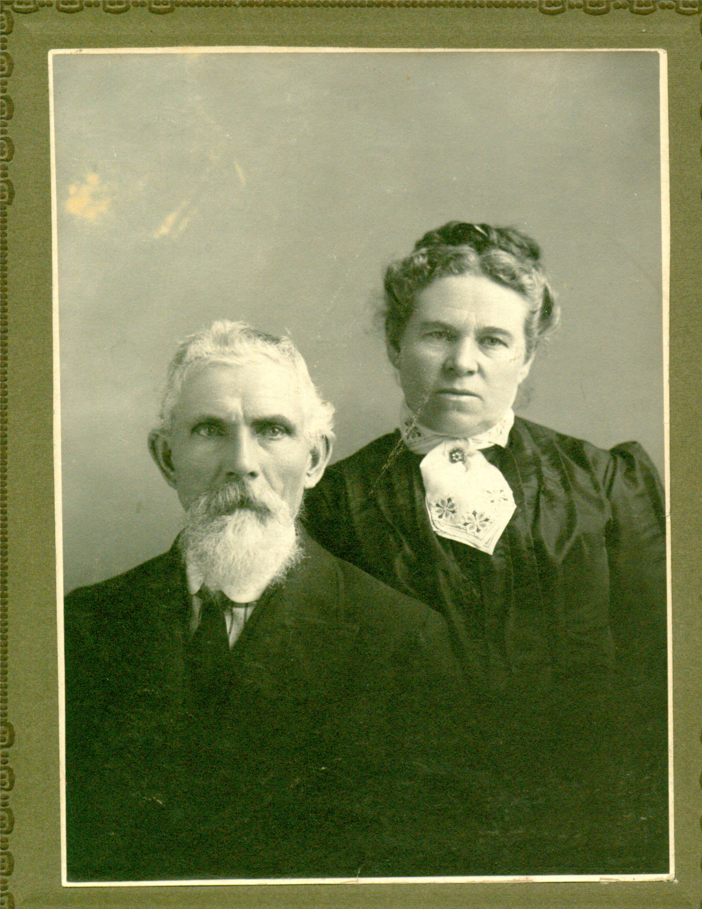
Walter and Elizabeth (Peters) Glendenning
Walter Glendenning was the second son of John and Elizabeth (Harley) Glendinning and was born on 26 November 1845 while the family was still living at Salmon Beach. Census figures below show the changes in the family over the decades. By 1861, as he census shows, he was living with his family in Canobie.
Census
of 1861 shows household of John Glendinon: John,
Aged 54, Scotch, Farmer, Presbyterian Margaret,
Wife, Aged 54, Irish, Church of England Elizabeth,
Aged 16 Walter,
Aged 15 John,
Aged 21 The
1871 census shows: Walter
Glendenning, Aged 25 John
Glendenning, Father, Aged 64 Margaret
Glendenning (wife) Aged 70 The
1861 census shows: Walter.
Aged 35, English, Farmer, Church of England,
Elizabeth,
Aged 32, Irish, Church of England Margaret,
Aged 77, widow, Church of England Venetia,
Aged 9 Alton,
Aged 5 John
Franklin, Aged 4 Mary
Ann, Aged 2 The
1891 Census shows the Glendenning household as follows: Walter,
Presbyterian Elizabeth Alton
.Figure 7: Census information for John Glendinning and family
On March 2, 1872 Walter Glendenning, married Elizabeth Peters; on February 17, 1873, Lot 30 was granted in Walter’s name. It is interesting to note that, while John, Sr. petitioned for the lots, they were actually granted in the name of the sons. Walter’s father and mother continued to live with them until their deaths, John, Sr. died in 1877 leaving, as the 1881 census shows, Walter as the head of the household:
Elizabeth Peters, born in Canobie, was the daughter of John Peters (October 23, 1821 - June 31, 1904) and Jane (Sealy) Peters (December 24, 1821 - September 12, 1892). According to a note in some family records, John Peters and Jane Sealy were married in October of 1847 and lived all their lives in Canobie, New Brunswick.
Walter Glendinning of the Parish of New Bandon petitioned (F9029) for one hundred acres situate as follows: Lot No. 30, Canobie, formerly surveyed for Charles Scott. By him transferred to John Glendinning and from John Glendinning to his son Walter the present applicant. The land is said to be occupied by the applicant, Walter Glendinning, and his father and improved by applicant and his father. A notation on the top of the petition shows 1865. Interestingly, the top of this form is pre-printed with the word “AUCTION”.
My other source shows a grant of Lot #30 in Canobie to Walter Glendenning on February 17, 1783. That is quite a lag between the making of a petition and the actual grant being made.
The property is directly across from the Canobie School, which is now the Women’s Institute Hall. The old home stood, among what is now a clump of trees. I believe that the homestead was inherited by his son, Leonard; later generations knew the area as Leonard’s Hill.

Grove in Canobie where the Grandfather Glendenning once lived
Walter was active in the church including being a Sunday school teacher. At first, church services were held in the local school. Later Trinity Union Church was erected in 1899 about a mile from the Glendinning property and was used by Presbyterians, Methodists and Anglicans. (It is now an Anglican Church). Walter is reported to have been one of the first trustees and, according to the Chaleur history, cut the first lumber to start the building. It is a small church with 8-10 pews on each side. The names of Mr. and Mrs. Walter Glendenning are included on a plaque in memory of the early church families. (Mr. and Mrs. John Glendenning’s names are also included)
Walter lived in Canobie and was active in community affairs. In 1882 he was one of the people responsible for turnpiking a new road into the Springfield Settlement. He was also a successful farmer.
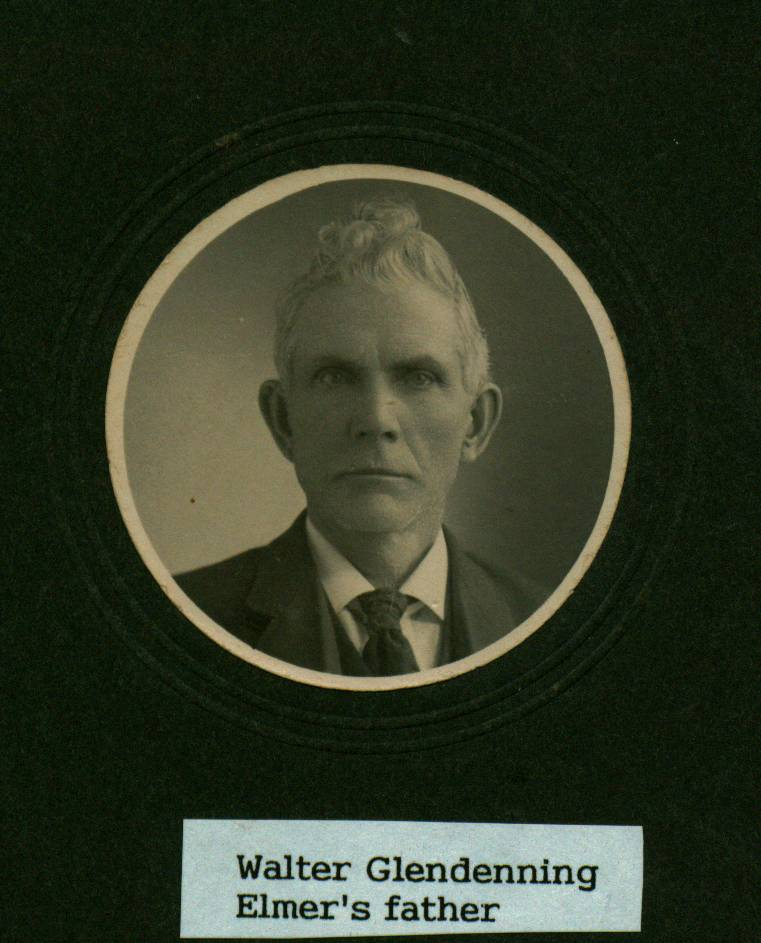
Walter carried on mixed farming and would, I believe, have been considered a successful farmer in his day. At his death, he owned:
Lot No. 30, Canobie, the old homestead, formerly surveyed for Charles Scott. But transferred to John Glendinning and from John Glendinning to his son Walter.
100 acres in Canobie, which I believe to be Lot #28, which he left to his wife, Elizabeth. It appears that my father, Elmer, bought this land originally and then sold (?) it to his father. This was likely the lot where Uncle Chip lived.
the Stevens Farm in Canobie containing 100 acres which he left to, Elizabeth, with the proviso that it be transferred to his son Raymond if he returned to settle in Canobie.
50 acres, the original Taylor Farm, which was left to his wife Elizabeth. This property is immediately west of and adjoins the Stevens farm. Apparently this land was left to or purchased by his daughter. Venetia. Guy Glendenning said that Venetia sold the property to Matt. Ellis
The
following are some of the items included in Walter Glendenning’s
will:
o a
house
o 2
horses and a colt
o 9
cows
o 4
sheep
o 1
bull
o 4
heifer calf
o threshing
mill
o binder
o seeder
o crusher
o wood
cutter
o truck
waggon
o express
wagon
o buggy
O light
open wagon
o mowing
machine
o rake
o plow
o harrow
o bob
sleds
o long
sled
o run
about
o one
cart
o sewing
machine
Figure 8: An excerpt from Walter Glendenning’s will
Walter Glendenning developed pneumonia and died while visiting his daughter, Venetia Doring (and other family members) who were living in Falmouth Foreside near Portland Maine at the time. His sons Elmer, Chipman, Ray, and Frank who ran a woods operation in New Hampshire. His will was written on January 6, 1908 just five weeks before he died. After his death, his wife, Elizabeth, went to live with her daughter Venetia in Falmouth, Foreside, Maine. She died there on May 14, 1915. Both are buried in the Presbyterian cemetery in New Bandon. NB (Brother, John and wife, Ellen are also buried in that Cemetery. The cemetery is still maintained although the church has long since disappeared.
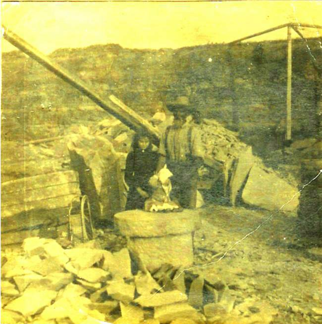
Grandfather Glendenning with daughter, Margaret in stone quarry
WATLING ROOTS
To the extent known, this section deals with actual ancestral families and their locations. The nature and extent of information for each family or location varies, reflecting the extent of my search rather that available information. In no way should this section be considered a complete family history.
While we usually carry the name of the male side of our ancestral family, in fact, each person is an equal descendant of many other families as well. In the writer’s case, he is directly descended on his maternal side from families named Watling, Leech, MacNaughton, MacDonald, McAskill and Jardine. These families reflect Highland and Lowland Scottish roots. Of my maternal Great Grandparents, all were Scots except two.
The Canadian roots of my maternal ancestors reside in the community where I was born, Black River, New Brunswick – a community some 10 miles south and east of Chatham.
BLACK RIVER CONNECTIONS
A. W. MacDougall says that the name Black River, in the MicMac language is Mat-quan-ti-gook - a term intended to describe its waters. MacDougall describes at least one lot, at McDougall's Point near the mouth of the river, which was granted to Delesderniere and Marsten prior to 1784. United Empire Loyalists came to Black River between 1785 and 1795. Following this, there arrived mostly people from Scotland, highlanders and lowlanders alike, including MacDonalds (McDonalds), MacNaughtons, McBeaths and MacLeans. Many came directly from Scotland while others are thought to have come to the Miramichi via Cape Breton, Prince Edward Island, or other Maritime ports.
The Black River flows from west to east and empties into Bay du Vin, which is part of the Miramichi River. By 1800, grants had been made to settlers along the shores from Hexham east. In 1812, there was a major push to settle the Black River including the Little Black River now known as the Little Branch. Settlements on the upper reaches of the Black River came a decade later and the Meadows closer to mid- century. Some specific settlement dates are found later in this chapter.
The area would have been completed wooded but river banks were relatively low with good access to water which was their means of transportation. The forests would be part of what is known as the Acadian forest – a mixture of balsam firm spruce, cedar, with some white and yellow birch, beech, maple and a sprinkling of ash on the higher ground.
Miramichi Place Names
Information about early place names of the area was taken from Geographical Names of New Brunswick, 1875.
Chatham was once known as Spruce Tree after a large Spruce tree growing on Water Street. The name changed to Chatham about 1800 and recognizes William Pitt, the Earl of Chatham and Prime Minister of England.
Although Wells Brook, Weldfield and Redmondville are shown, the origin of the names is not given.
McKenzie Settlement was likely named after John and Roderick MacKenzie who were each granted 100 acres there in 1871 and 1873. John K. MacKenzie was granted lot #163 (100 acres) in 1907. In 1909 Mary Anderson was granted 300 acres of land at the Little Branch end of the McKenzie Road. The MacKenzie Road started (or ended) officially at the Little Branch School.
Point aux Carr was once known as Cape Beduin; it is also known as Pointe au Quart.
Robert Logie came from Scotland around 1790 and the Black Brook Post Office was renamed Loggieville when Andrew Logie became Postmaster in 1895.
Miramichi was probably named by Cartier in 1535 from Montagnais Maissimeu Assi meaning Micmac Land.
Northumberland Straight appears to have been named by Admiral Colville around 1877 after his flagship, Northumberland; before that, the Straight was known as the Red Sea.
Northumberland County was established in 1785 and was probably named after Northumberland Strait.
Escuminac comes from Micmac Eskumunaak meaning "A lookout place."
Hardwicke Parish was established in 1851 and named after Benjamin Hardwick of London who contributed to a Church of England Mission at Bay du Vin. He also contributed a communion service to the church.
Glenelg Parish was established in 1814 and was named by Major McDonald who settled in the area around 1790.
Black River was settled in 1820 by settlers from Scotland. Before that it was known as Glenelg.
Napan is derived from the Micmac Manabalnamajik which means take fish off stick.
Hexham is also has Scottish roots.
Transportation
Transportation between settlements was mainly by boat hence the fact that initial settlements were along rivers and shores. The dates on which grants were made also reflect the fact that, in the case of Black River, settlement proceeded up the river from its mouth. Adjacent lands along at Hexham and in Miramichi (Bayside) were granted in the 1780's and 1790's; settlers began to spread up the Black River, at least along the south side, after the turn of the century. Initially blazed paths, and eventually roads were made between communities. Elsewhere, I quoted my Great Grandmother’s sister, Mary Anne Harley, about her walk from Pokemouche through the woods to Newcastle.
Helena (Smith) Kingston remembered her father, or was it her grandfather?, traveling from Bayside to Loggieville by small boat to pick up supplies. Later, commercial boats brought supplies from Loggieville dropping them off at various locations along the coast often taking fish on the return trip.
According to the History of Bay du Vin, 25 pounds Sterling was appropriated in 1819 to develop a road from Black River to Bay du Vin. In 1824, John Bailey Williston was given a sum of money to build to a width of 20 feet half the road from Bay du Vin to Black River.
Even when I was a youngster, I remember someone pointing out the “bark road” which by then was only an overgrown road where it crossed our property but could be more clearly seen and perhaps even used where it crossed the McKnight Road. The Bark Road was used in winter to haul bark from the Black River area to be used in both Chatham and Newcastle during the shipbuilding era. It likely started somewhere between Black River and Bay du Vin, crossed woodland properties in the Branch and Black River, crossed the river, travelled along the “short cut” towards Point Aux Carr then turned west, crossed the Napan road and eventually ended up at Chatham or Newcastle.
The first Tasks
On arrival, an immigrant would seek out a piece of land to make a home. The land was heavily forested and the first task would be to make a clearing and prepare lodging for the coming winter, Homes were made of logs cut on the property by hand; crevices between the logs were stuffed with moss to keep out the cold and snow. Logs not needed were used for firewood with the remaining burned as brush; the first seeds, wheat, oats, potatoes and garden vegetables were planted and harvested among the stumps - again by hand. A root cellar kept vegetables from freezing during the long winters.
Schools
Most of the early settlers in Black River spoke Gaelic. Based on the work of A. W. McDougall, the first formal instruction in Black River was provided in a barn belonging to Archibald Cameron, Sr. Later teachers provided instruction in their own homes. In 1825, residents petitioned for the erection of a school, which was erected across the road from the Richard Godfrey residence (Until a few years ago, the residence of John Godfrey); this would be just east of the lane leading to St. Stephen’s church. This building seems to have served all of Black River and as far east as Bay du Vin. About 1845, the district was divided with one school being built at Middle Black River and another at Bayside (now Miramichi). A few years later a school was erected at Little Branch; shortly thereafter, the school burned but was soon replaced. I have no information on dates for the first school in Upper Black River but believe that the first school was east of Route 11.
About 1937, the Rev. Douglas Smith, Rector at St. John’s Anglican Church in Bay du Vin provided tutoring in the Rectory to high school students in the area; numbers grew including students from Black River. Teachers were hired and classes were moved to the church hall. In January 1940, the Miramichi Rural High School opened at Miramichi (Bayside) with 67 students enrolled.
Mills
The History of Bay du Vin records a sawmill in Bay du Vin operated by Ortho Robichaud in 1789. The Bay du Vin history also reports the following taken from the Gleaner in 1833.
Mr. George Fowlie erected a gristmill on the Little Black River, which commenced grinding last week. We have seen some bread made of the flour manufactured at this mill and it was of superior quality. It has a never failing stream of water and will be a great accommodation to the inhabitants of Bay du Vin and adjoining settlements where such an establishment was much wanted.” The Fowlie mill was burned and rebuilt twice.
Churches
At first the settlement was served by itinerant ministers and missionaries. Among the visiting ministers was the Rev. Dr. James Drummond MacGregor, a Scot who had been sent out to minister to the Presbyterians in Pictou, Nova Scotia. In addition to serving the folk of Pictou, MacGregor traveled throughout New Brunswick, Nova Scotia and Prince Edward Island. Each visit to a community usually lasted several days, and even weeks, and included preaching, praying, and religious conversations. The Memoir of Rev. James MacGregor, D.D. recount his visit to Black River (p.316) as follows:
“On the first and second visits to the Miramichi in 1797 and 1807, he preached and baptized at Black River, Bay du Vin, and on both sides of the Miramichi, up as far as the point, so called, at the junction of the North and South-west branches. Those who recollect him remark his happy faculty in introducing religious conversation.”
In 1812, a church, thought to be Presbyterian, was built in at Tuckers Point, at the mouth of the Bay du Vin River on the west side. (While Tucker’s Point was used in conversation by several people, the name does not appear in Geographical Names of New Brunswick by Rayburn, 1975.) Some gravestones are still to be found in the area. The church served all Protestants in the area.
Given that Black River was a growing community and that most of the Presbyterians lived several miles from Tucker’s Point, a community of people who worshipped mostly in the English tradition, it is not surprising that talk soon turned, first to finding a Presbyterian minister and later to constructing a place of worship
W. MacDougall describes Gunn’s Point (part of Lot #4 granted to Alexander Gunn on June 3, 1812) as follows:
“The proposed site for the church, which has long been known as Church Point, is a peninsula several acres in extent, jutting out from the mainland on the South Side of the Black River about three miles from its mouth, and connected to the shore by a narrow neck of land. It has dry sandy soil, and at that time was partly covered with a heavy growth of timber. It is an ideal location for a church, probably without parallel in the whole Province. A portion of it had previously been used as a burial ground, and there it was decided to build the church.”
On April 21, 1835 a contract was awarded to William Porteous to erect the church; structural timber was cut locally. The building was 45 feet long by 30 feet wide with an 18-foot wall. On November 20, 1836, the first house of worship, St Stephen’s Presbyterian Church, was formally opened with the Rev. Mr. Fraser as its first minister.
By the turn of the century, St. Stephen’s sanctuary had become quite dilapidated and, instead of making repairs, a decision was taken to build a new sanctuary. The result was the opening of the present sanctuary on December 30, 1906.
As a result of the creation of the United Church of Canada in 1925, members who wished to continue in the Presbyterian faith found themselves without a church building. For a few years they met in member’s homes or in schools. In 1930, St. Paul’s Presbyterian Church was officially opened; St. Stephens continues to serve the community as St. Stephens United Church.
Post Offices
Canadian Archives has a database, searchable through the Internet, on post offices and postmasters. On checking the Little Branch Post Office, I found the following:
Little
Branch Post Offices
Postmaster
Dates Cause of vacancy Alexander
Cameron 1871-11-01 to1876-03-30 Resignation
(Closed
for 15 months)
John
MacNaughton 1876-08-01 to 1883-08-20 Resignation, closed
Alexander
Cameron 1884-11-01 to 1887-03-22 Resignation; closed for 6
months
George
Fowlie 1887-09-01 to 1899-10-02 Death
Mrs.
Marjorie Fowlie 1900-02-01 to 1903-09 Change in site
Jubal
Watling 1903-12-01 to 1910-12-02 Resignation A.E.
MacDonald 1911-03-01 to 1914-08-10 Resignation
Elmer
Glendenning 1914-11-01 to 1916-08-01 Resignation
Donald
MacNaughton 1916-09-01 to 1928-10-31 Closed
Figure 9: Little Branch Post Offices
There was Post Office named Watling, which opened in 1911 and closed in 1928. The Postmasters were Donald Watling, A. H. McKay and A. D. Watling. This post office was on the north side of Black River between Middle and Upper Black River.
Land Grants on the Little Black River
The lower portion of the Black River, including the Little Branch, was granted in 1912. Since this is part of a family history, rather than a general history, I include only those grants of immediate interest or reasonably adjacent to ancestors. Based on my review of the Crown Land Grants Index and maps, the original grants along the south side of the Little Black River were as follows:
1 Enoch
Godfrey 140 June 3,1812 F 623 2
Alexander McDonald Sr. 225 June 3,1812 F 623 3.
Kenneth Sinclair 220 June 3,1812 F 623 4&5
Angus Sinclair 410 June 3,1812 F 623 6
Alexander McDonald 140 June 3,1812 F 623 On
the north side of the Little Black River starting at the mouth, we
find: 1 John,
Catherine and Jean, children of Hugh MacLean 470 Acres 2 Farquhar
McRaw 240
3 Kenneth
MacDonald 440
4 Duncan
MacNaughton 200
Moving
west from the Alexander McDonald property, we find: 1,2
& 3 John McLean 370
4
Alexander Gunn 230
5
Robert MacBeath 165
6 John
MacLeod 195
7A Thomas
Patterson 100 Dec. 31, 1908 7B Elmer
Glendenning 100 Sept. 9, 1936
Selected Land Grants on the Little Black
River
LOT NAME ACRES DATE
VOL NO
Figure 10: Selected Land Grants on the Little Black River
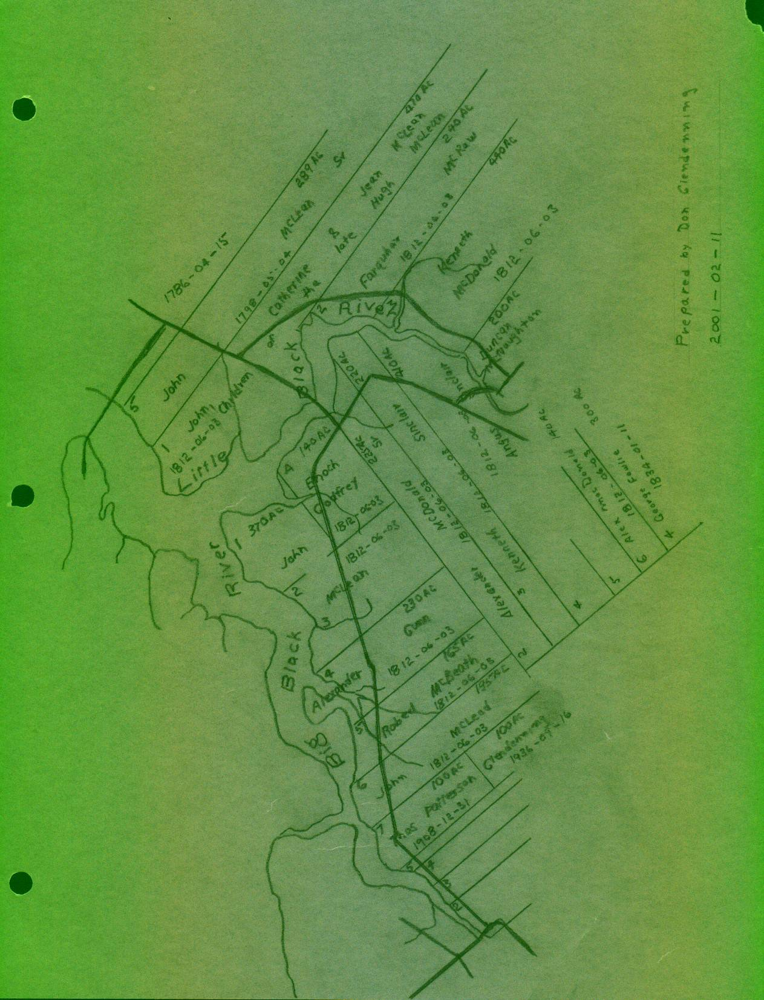
Figure 11: Location of Land Grants in Little Branch
The
Meadows:
26
Terrence Cook 50. July 24, 1833
27
Patrick Smith 112 Dec. 21, 1838 28
Richard Hutchison 100 June 4, 1849 29
Gardiner Archibald 98 May 10, 1880 30
Jubal Watling, Jr 100 April 20, 1881
31
Donald Cameron 100 Jan. 30, 1854 33
Unknown
34
Donald McBeath Mar. 9, 1883 Neighbours
on the north side of the river included: J
Edge May 9, 1842 Alexander
MacNaughton 286 June 3, 1828
John
MacNaughton 200 July 24, 1822
Notes: 1 Source:
Crown Land Grant
Index, Minister of Natural Resources and Energy
New
Brunswick, 1988 Spellings
as found in the source document Original
land grants neighbouring my ancestors Grantees
may have been granted additional land in area
Malcolm
MacNaughton 200 July 24, 1822
200
July 24, 1822
LOT NAME ACRES DATE VOL NO
Figure 12: Selected Land Grants in the Meadows
But the essence of a community is its people, the remaining paragraphs, therefore, provide a few notes on each of the following families known to be a direct ancestor:
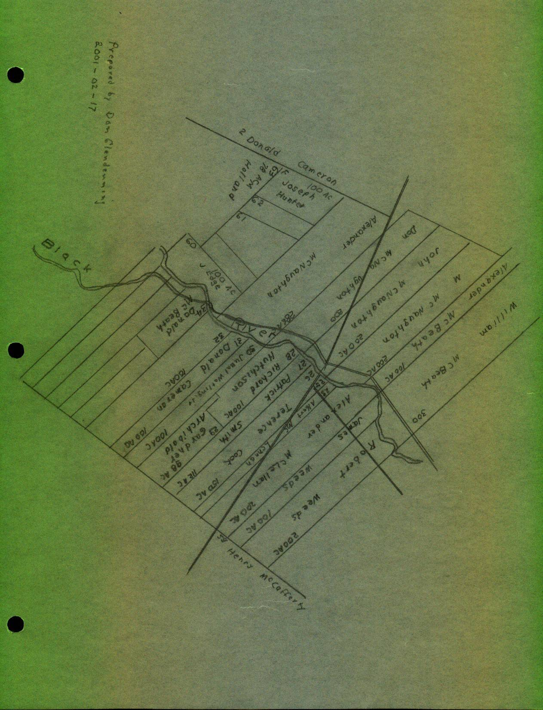
Figure 13: Lot layout at the Meadows
A MACDONALD
The Gaelic spelling of MacDonald, meaning the son of Donald, is Mac Dhomhnuill. – but there were many Donalds. The Macdonalds were a very large clan having taken many septs under their wing.
Alexander MacDonald was a native of the Parish of Assynt in Rosshire, Scotland. That area of northwest Scotland is hilly and rocky with many inlets and streams with little land suitable for cultivation; the county also includes many islands
Alexander and Grace (McAskill) MacDonald
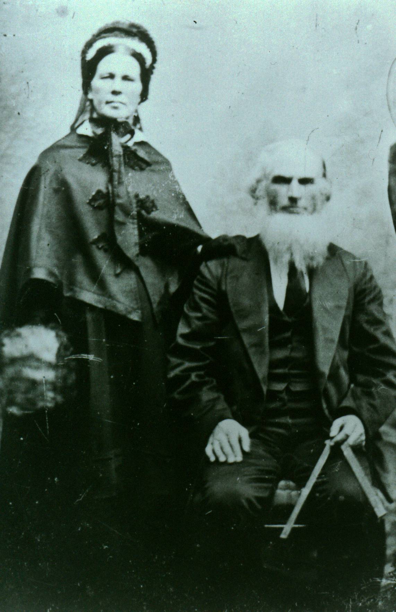
Believed to be Alexander and Grace (MacAskill) MacDonald
My Great Great Grandfather, Alexander MacDonald married Grace MacAskill (I believe a relative of the giant Mac Askill of Cape Breton) and was said to have actually come to the Miramichi by way of Cape Breton. George Loggie said that Alexander MacDonald spent the first winter in Point Aux Carr after coming from Cape Breton
In fact, some suggest that they were married in Cape Breton. Their children include:
Kenneth (1805-1837)
Annabel (1806?- )
Hugh MacAskill (1808?-1873)
Anne (1813-1896) married William MacKnight (1804-1865)
Isabella (1810-1893) married Roderick Mackenzie (1808-1893)
Margaret (1815-1900) married William Godfrey (825-1904)
John (1817 - 1900) married Elspeth Jardine (1821-1907)
Mary (1821-1885) married Frederick Robertson
Jessie (1823-1912)
The original MacDonald home, I believe, was close to the river in the field just above where Norman Glendenning now lives. There was an old apple orchard there as well as a depression in the ground, which we always thought was the old cellar. Teddy Fowlie once said that his father, Bill Fowlie, remembered the old homestead in that location; other4s remembered a barn. Lillian (Glendenning) Weeks remembered a pile of lumber in that area that she thinks was the remnants of the old home. I remember a pump in the field on Uncle Jim’s property, not far from the orchard, and wonder if it may have been part of the original Macdonald homestead. In any case, the land sloped from there to the river making easy access by boat.
Settlers frequently lived on their land even before legal transfer. Once there, and depending on the time of year, a clearing was required to build a home, and a barn, vegetables would be planted among the stumps with seeds brought with them from the old country and a root cellar would be dug for winter storage.
The following was taken from the book by A. W. MacDougall.
Alexander MacDonald came from the Highlands with the 1803 immigration. He settled on Lot #3 of the Third Division, on the west side of the southwest branch of Black River...
It has been told of the elder Mr. MacDonald, that when the Government Surveyors were allotting the land to the prospective settlers, he was told to proceed along the shore till he had secured a sufficient frontage for his lot, the surveying party following him downstream in a canoe. Land being plentiful, Mr. MacDonald decided to secure as large a grant as possible. After he had gone a considerable distance, his further progress was barred by a creek, but he plunged in and waded across, only to be brought to a halt on the other side by the government men, who considered that he had already acquired sufficient. (Would this be Miller=s Brook?)
John and Elspeth (Jardine) MacDonald
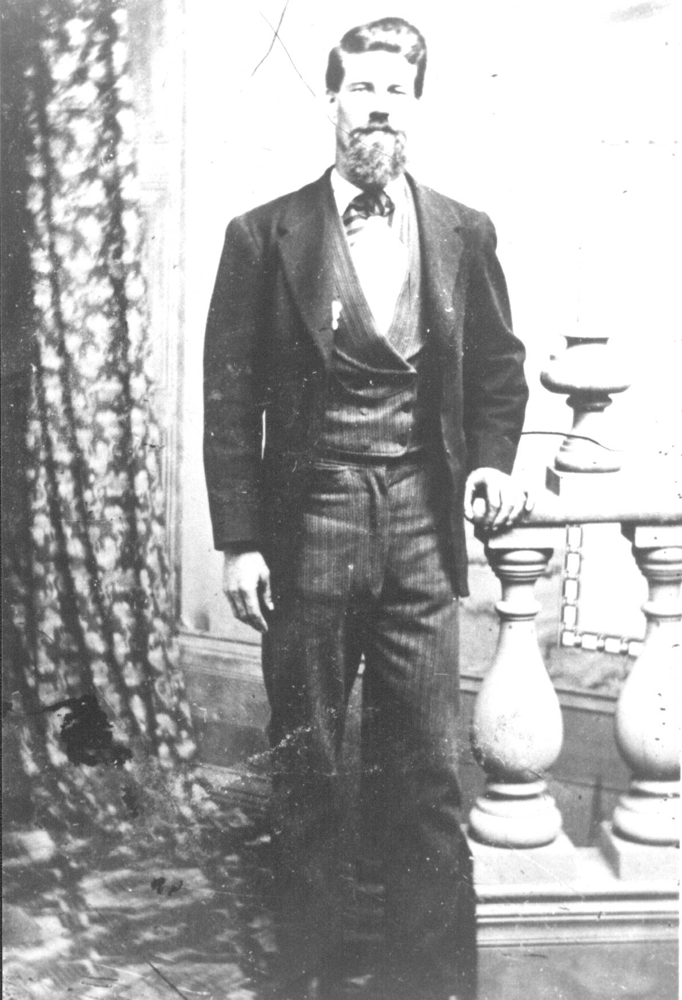
Believed to be John MacDonald
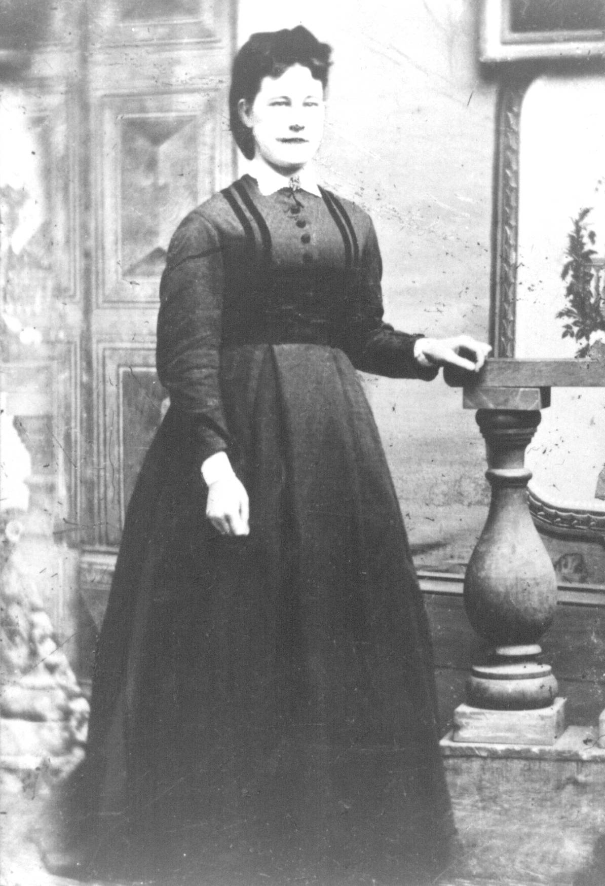
Believed to be Elspeth (Jardine) MacDonald
I do not know the legal arrangements but Alexander MacDonald’s grant appears to have passed equally to his son, John D, and daughter, Jessie with John getting the eastern half and Jessie the western half; Neil Watling lives in the John Macdonald home and Norman Glendenning lives in the Jessie MacDonald home. John was a farmer; Jessie was a schoolteacher.
John MacDonald married Elspeth Jardine their children were:
James (Abt 1843-1923) Did not marry
Alexander (Abt 1845- )
Janet (Abt 1847- ) married Eliphet Allen
Grace (1848 –1934) married Jubal Watling (1846-1915)
Kenneth (1851-1927) married Catherine McGraw (1852-1931)
Isabella (Abt 1854-1922) married James Finno (1856-1946)
Hugh (Abt 1856- )
Joseph (Abt 1858- )
Elspeth (Abt 1859- )
William (Abt 1865- )
St. Stephens Church records show that Elspeth (Jardine) MacDonald, my Great Grandmother, died of debility on September 12, 1907 and is buried in St. Stephen’s Cemetery. Presumably, John MacDonald, her husband is buried there also but I have not been able to confirm this.
The Northumberland County Registrars Office has an entry (No. 226) which is an agreement between James J. McDonald, farmer of Little Branch and Jubal Watling, farmer, his wife Grace Watling and their sons Jubal George, John McDonald Watling, James Alexander William Watling and Donald Ernest Watling. The agreement was signed on November 13, 1901.
Under the agreement, James McDonald says that his mother is not well and he, James is not able to work the farm. James transfers all the land and buildings to Jubal and Grace Watling and their sons in return for a guarantee that the Watlings will provide James and his mother with a home, meat, drink, washing, clothing, bedding, fire, light, medicine, medical attendance, personal expenses and All necessaries as persons of their ages and conditions in life usually require and are accustomed to. And also A at their respective deaths shall give them and each of them decent Christian burial paying all funeral expenses...
Jessie MacDonald
At the Family Reunion in July, Cameron MacDonald provided me with a photocopy of some pages from the School Register kept by Jessie Macdonald, a Third Class Teacher, for District 11, Parish of Chatham. County of Northumberland for the period commencing April 2, 1860 and ending June 30, 1860: the photocopy is quite dim. Names recorded include McKnight, Gilliys(?), Jardine, Lockerbie, Murdoch, Dickson, Murphy, Carruthers, Joudry and Brymer.
There were 38 pupils registered in the month of June, 1860 with the youngest being John Jardine age 4 and the oldest being Robert Gilliys(?) Aged 17.
Cameron also provided a copy of the contract between Jessie Macdonald and the Trustees. Again, some I cannot read and the remainder is difficult to read.
We, the undersigned, do agree to pay to Jessie McDonald ... the several sums annexed to our names for the purpose of teaching a school in district No. 11, Parish of Chatham, County of Northumberland, for 6 months commencing ... , 1858 and the said Jessie McDonald agrees to teach a regular school for 6 months in said place according to rules given by Inspector for this County.
Napan
October 15, 1858
Jessie McDonald
B LEECH
Leech, Leitch come from the old English meaning “doctor”. The name Leitch is widespread in Scotland but also is mentioned specifically in Assynt which is where Alexander Macdonald came from. Other variations include Leche, Lech, Leyche and Leiche.
C MACASKILL
The McAskills are found in Sutherland County, Scotland. Like its neighbour, Rossshire, to the south, the area is hilly and rocky with many inlets and streams and little land suitable for cultivation. It is likely that Grace MacAskill came from that area but I do not have definite proof.
D JARDINE
According to the “Jardines of Atlantic Canada”, is of French origin meaning “a dweller at or near a garden. A Jardine fought with William the Conqueror at the Battle of Hastings in 1066; it is assumed therefore that the Jardines came from Normandy with William. We do not know for certain if the Jardines in Scotland found their way north from England or if they came as part of another wave of conquerors from Normandy a few years later, however, the first written record of the name of Jardine in Scotland was in 1150.
The Jardines, as with the Glendennings, were Border people. That is, they lived in Dumfriesshire and within 30 to 40 miles of the Border, and even closer to the birthplace of my Great Grandfather, John Glendinning at Callister Hall not far from Lockerbie.
The earliest reference to Jardines in my family is Joseph Jardine, born in 1767 in Tundergarth, Dumfriesshire, Scotland in 1767. He married Janet Kerr, born in 1772 in Loveland, Scotland and they married on November 16, 1792. It is believed that some of the children were born in Scotland, however, Joseph was granted land in Napan on February 27, 1827. Joseph, my GGG Grandfather, died in Napan in 1849 and Janet in 1860. Their children include:
James
Jane
George
Thomas
John
Elizabeth
William
Janet
Samuel (presumably died young)
Samuel
James Jardine married Elspeth ??? Their children were:
Margaret
Elspeth, my GGrandmother who married John MacDonald
Joseph
Janet
George K.
James Kerr
The Jane Elizabeth Jardine, after whom my mother was named, was a first cousin of my Great-grandmother. Her father was John, a brother of Frank.
F MACNAUGHTON
The following information about the MacNaughtons was provided by Donald Edge, whose mother was a MacNaughton and a direct descendant of the early MacNaughtons.
According to the 1851 census, Christina MacNaughton came to New Brunswick in 1812; she was joined by three brothers, Alexander, Donald and Malcolm in October, 1817 and Mary in November of the same year. In 1919, the family was joined by their mother, Catherine and two other brothers, Duncan and John.
They were granted land on the north side of the Black River A, Alexander being granted 296 acres and John Donald and Malcolm 200 acres each. Duncan had been killed by a falling tree in 1824 and was the second person buried in the Black River Cemetery
John MacNauchtan was born at Dunderave Castle, Scotland and died (before 1750) at Glenlyon, Perthshire, Scotland. His son, Malcolm was also born at Dunderave Castle and died at Glenlyon.
Malcolm’s son, John, was also born (July 24, 1774) at Dunderave Castle; he married Catherine Stewart and they had eight children. John died in Scotland.
Children of John MacNaughton and “Catherine Stewart:
Alexander (1789-1819) married Janet Jack (1782-1872)
Christina (1785-1865) married Robert Weeds (1788-1872)
Duncan (1787-1824) married Margaret MacPherson (
William ( (
Donald (1795-1820) married Margaret MacBeath ( -1857)
Mary (1799-1829) married John Cameron (1795-1879)
Malcolm (1797-1865) married Barbara MacBeath (1806-1875)
John (1801- ) married Marjorie Cameron (1807-1878)
Several of John’s children and his widow came to Black River.
Children of Alexander MacNaughton and Janet Jack:
Mary (Abt.1822- ) married William Watling (Abt. 1822- )
Catherine (1820-1855) married John Edge (1814-1896)
Janet ( married George Dick (
Christina (Abt.1823-1901) married Jubal Watling (1821-1900)
G WATLING
Origin of Name
The first record of the name was found in Sussex, England somewhere between London and Dover. It is likely that the name arises from Wartling which was a hamlet in the area but others believe that it was associated with Watling Road, the great Roman Road, which started near Dover, passed through Canterbury, turned north at London and went as far as St Albans It is thought, furthermore, that the Watlings were Vikings who landed in Northern Scotland in 870 AD, invaded northern France in 910 AD and then came to England with William the Conqueror in 1066. The name is found in the Domesday Book which was a census taken in England in 1086.
By the time of Richard 1 the Watling name had spread north to Watlingford in Oxfordshire, Watlington in Norfolk, Essex and Hertfordshire. Many Norman families moved north to Scotland in the 12th century and this might have included some Watlings.
Watling is thought to share the same roots as Whatling, Watlington, Watlingtone, Whatlington, Whatlingtone, Wadling, and Wadlingdon. Over time, the name spread into the northern parts of England and to Scotland as well.
Kinsmen of the family Watling who came to North America include Ffrances Watling who settled in Virginia in 1660, John Watling who landed in America in 1753, James Watling settled in Philadelphia in 1842 and Mary Watlington who settled in Antigua in 1679. Some Watlings moved to Canada after the American Revolution. Thomas Watling was banished to Australia for forgery in 1792; Francis Watling settled in Virginia in 1660, John Watling landed in America in 1753 and Mary Watlington settled in Antigua in 1759.
.
The Roger Watling Website includes the following comments about the origin of the Watlings:
“In the 5th/6th century a band of people crossed the North Sea from Europe to the British Isles, we do not know if it was one or more boats, but as a yachtsman sailing these waters I would suppose the latter, there being safety in numbers. They knew where they were going as trading was and had taken place long before, also they would have had oral stories from their forebearers who might have served in the Roman Legions, without a shred of evidence I like to think that they were Angles, or possibly Jute in origin rather than Saxon. The leader of this band was WACEAL, and those with him of the same clan, tribe or group were the Waceal – ingas. Ingas was not the son of as in the Scottish Watson, but meaning people of or followers of Waceal, so members of this group would be referred to as Wacelaingas. As time past the name began to change from, the vowels hardening, or softening, plus the input of people from other tongues and one form was Waselin. The earliest records I have are for Norfolk 1086, the DOOM’D DAY BOOK. In this book is recorded the Manor in the Half Hudred Diss, today scholars call it a lost Manor as its whereabouts are unknown. (I have my own theory, but that is another story) The Manor of Watlingeseta it states was held by the king (William in 1086, and before 1066 Edward the Confessor). Also recorded in the book is Wazalin who held land in Weeting, Norfolk, one of the few Anglo Saxons still holding land after William the Bastard and his bunch of land grabbing thugs won the Battle of Hastings. Watling Street was built by the Romans during their occupation and the name came after the Roman period, the present day town of St. Albans was originally Watlingcaster, but after the martyrdom of St. Alban the name changed, it can be supposed that the Wacealingas lived there.”
Watling Street
Watling Street was a major Roman Road built by the Romans after they invaded Britain in 55 BC. It started at Reculver, near Dover, passing through Canterbury (where a street sign bears the name) and on to London and points north. From London, Watling Road runs north and west passing through St. Albans (ancient Verulamium) a distance of about 200 km. An Internet source says that Watling Road ran from Dover to North Wales.
Coat of Arms
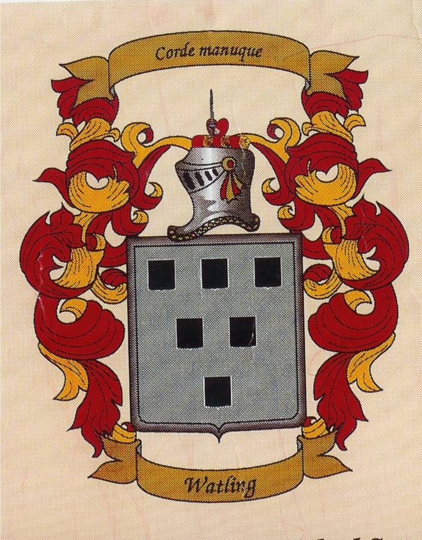
Figure 14: Watling Coat of Arms
Blazon of Arms
The blazon of Arms is translated graphically as shown below. The reader is reminded that coats of arms may vary slightly depending on the artist and modifications by later family members.
The
Blazon of Arms for Watling is described as “ and
the crest
“Out
of a human heart a dexter hand grasping a sabre all proper”
“Argent
Six Escutcheons Sable”
Figure 15: Watling Blazon of Arms
Australia
I am reading a book, The Fatal Shore, by Robert Hughes, about the history of Australia. In it, he talks about Thomas Watling, from Dumfries, Scotland, transported for forging notes on the Bank of Scotland; Watling was a landscape painter who arrived in Australia in 1792. Watling is quoted a number of times on the barrenness of the country and the conditions in which people lived.
Pious Pirate
San Salvador Island is part of the Bahamas. On Sandy Point sits Watling Castle. The island was originally named Watling’s Island in honour of Captain George Watling a famous buccaneer and pirate. (It was renamed in 1926). He was also known as the “pious pirate” because he would not allow his crew to play cards or indulge in piracy on the Sabbath. The name Watling appears frequently in literature about the Bahamas. There may have also been a pirate named John Watling. I am sure that neither of these were part of our family. (http://www.bahamasnet.com/sansalvador.html)
Suffolk, England
Suffolk County was described in 1812 as follows:
"Suffolk,
an English COUNTY
47 miles in length and 30 miles in breadth, bounded on the West by
Cambridgeshire, on the North by Norfolk, on the South by Essex and
on the East by the German Ocean. It contains 575 parishes, 28 market
towns and sends 16 members to Parliament. The air is generally
wholesome, but the soil is various, on the sea coast it is sandy and
there are several small hills which yield hemp, pease and rye. The
inland parts are clayey and more full of trees. The borders towards
Essex are fit for pastures and the NW produces corn of all sorts.
There are manufactures of several kinds, particularly all sorts of
broad-cloth, stuffs and coarse linen. The principal rivers are
Little Ouse, the Waveney, the Stour, The Breton, the Orwell or
Gippe, the Ore and the Blyth. Ipswich and St.Edmundsberry are the
principal towns".
From "The Complete and Universal Dictionary" by Rev James Barclay – 1812
Prince Edward Island
Prince Edward Island Archives show a Jubal Watling living in Lot No. 52 at the time of the 1841 census. Lot 52 is at the Eastern end of PEI near but not including Montague and Cardigan.
According to the 1841 census, Jubal Watling was between 45 and 60 years of age, head of the family, his trade or occupation was that of a mason, he had 100 acres of land but one cannot tell if he rented or owned the land. The household consisted of Jubal as head, one female between the ages of 45 and 60 presumably his wife, and 4 males under the age of 16. Four members of the household were born in England and two were natives of the Island.
Other information in the PEI archives shows Jubal Watling married Louisa on 14 July 1831 and that they came from Norfolk County, England.
An examination of the two sets of data shows that:
One Jubal came from Norfolk and the other came from Suffolk.
The PEI Jubal has a different spouse; Susan Leach may have died and Jubal remarried.
The age brackets fit Jubal and Susan.
While my notes show only Jubal and Emily actually born in England, it is likely that the older children would have been born there also.
Jubal Watling and Susan Leech
The first Jubal Watling, my Great-Great Grandfather, for which I have information, was Jubal Watling married Susan Leach. They married in Metfield, Suffolk County, England on November 14, 1814. Later they appear to have moved to Syleham, Suffolk County, England where their son, Jubal was baptized on August 17, 1823. I believe that Jubal and Susan stayed in England, although I do not know for sure. A note in Kenneth Watling’s database says that Jubal Jr. migrated to the USA - we do not know the year.
Jubal Watling married Susan Leach in Metfield, Suffolk County, England on November 14, 1814. In 1823, they were in Syleham, Suffolk County, England where their son, Jubal was baptized on August 17, 1823. I found no evidence of Jubal and Susan coming to Canada, although it is possible. A note in Kenneth Watling’s database says that Jubal migrated to the USA - we do not know the year. From my research, I believe that to be the Jubal who married Christina MacNaughton.
Family lore says that Jubal came to Black River via Cape Breton and maybe PEI; that is certainly possible. My search of PEI archives revealed a number of Watlings, including a Jubal, but the names, dates and marriage information did not match that of the Black River Watlings.
The following Watling siblings came to Black River:
Jubal who married Christina MacNaughton
William who married Mary MacNaughton,
Emma who married William Eddy,
Mary Ann who married William Maxwell, and
George who lived in the USA
The use of the name Jubal by three successive generations causes some confusion but I believe that the following information is accurate.
Janet Watling shows Jubal and Susan with two additional children – John and Susannah.
Jubal and Christina (MacNaughton) Watling
Jubal, son of Jubal and Susan Leach, arrived in Black River and, about 1845, married Christina MacNaughton.
Children of Jubal and Christina (MacNaughton) Watling were:
Donald
Catherine (Kate)
Jubal, 1846-1915 married Grace MacDonald
Alexander (Sandy)
Susan
Malcolm
William
In 1851, Jubal Watling (F4243) petitioned for 50 acres of land situate as follows: on the South side of Black River adjoining south of William McBeath’s meadow lot and east of a lot applied for by John Edge. The petition is dated at Chatham on April 9, 1851 and includes his signature. The property was vacant, surveyed but without improvements. Other handwritten notes on the page are confusing in that they show apparent approval on May 21/1851 and Auction, August/51". They are signed by Peters, the Deputy Surveyor. No lot number is given but records show that a William MacBeath owned property in the area. I believe that this was the Jubal Watling married to Christina MacNaughton. This land was probably not in the Meadows.
Jubal and Grace (MacDonald) Watling
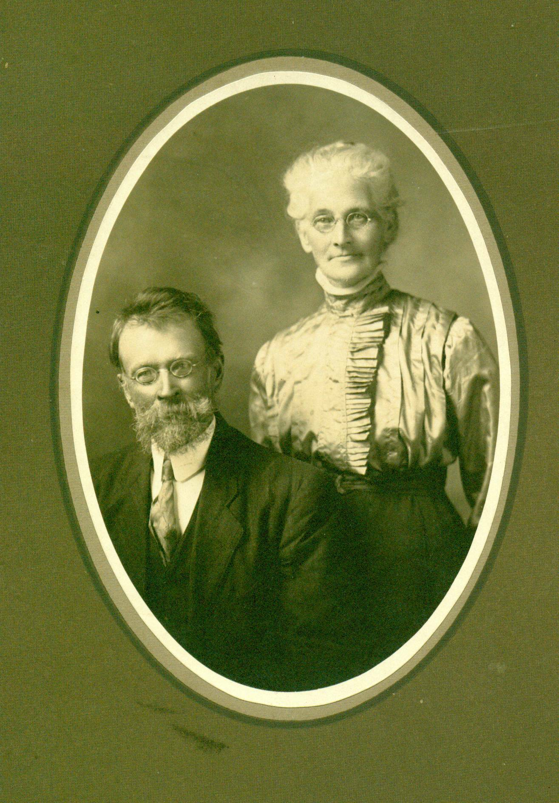